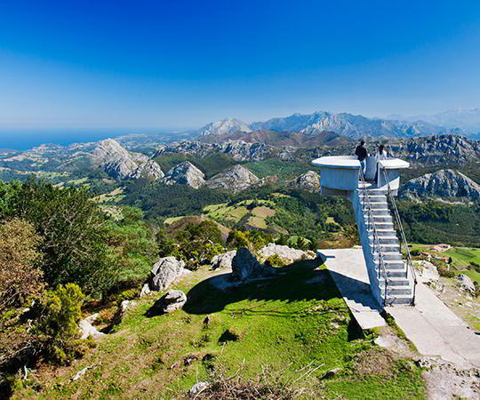

|
Si de algo están orgullosos los asturianos es de su naturaleza: sus misteriosos bosques, su litoral a salvo de la vorágine inmobiliaria, sus ríos salmoneros y las montañas escarpadas, ideales para los amantes de la escalada y el senderismo. Ese orgullo se traduce en una magnífica conservación que ha permitido proteger con diferentes figuras nacionales e internacionales más de un tercio del territorio y exhibir la costa mejor preservada de España. Entender esa pasión por la naturaleza solo es posible si se experimenta. Para adentrarse en ella es imprescindible meter en la maleta la ropa y el calzado apropiado. La exploración comienza por las 7 Reservas de la Biosfera declaradas por la UNESCO en el Principado de Asturias. |
No te pierdas...
|
|  | Picos de Europa fue el primer Parque Nacional de España, protegido desde 1918. En su corazón emerge el Picu Urriellu, un auténtico imán para los escaladores, y se abren los Lagos de Covadonga. Las Fuentes del Narcea, Degaña e Ibias es un Parque Natural con una fauna totémica, entre la que destacan el oso y el urogallo y donde es posible conocer la Reserva Natural Integral del Bosque de Munieḷḷos y la Reserva Natural Parcial de Cueto de Arbas. |